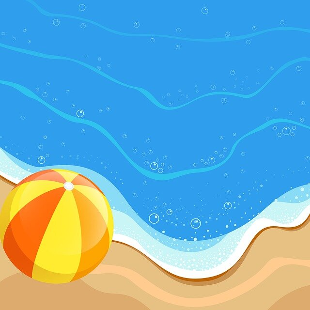

En esta actividad se trabaja la coordinación ojo-mano, y se practican diferentes posiciones de Yoga como técnicas de respiración de Pranayama.
El Pranayama mejora la capacidad pulmonar, incrementando la capacidad respiratoria y contribuyendo a una mayor oxigenación de la sangre como para todo el organismo, también relaja los músculos y disminuye la ansiedad.
Que se necesita:
Una pelota de playa grande.
Tiempo aproximado:
20-30 minutos.
Instrucciones:
Escribir una postura de Yoga en la pelota de playa, y una técnica de respiración de Pranayama que los niños han aprendido anteriormente.
Cuando los niños atrapan la pelota de playa, realizan la pose de yoga o la técnica respiratoria que están mirando en la pelota.
Si se desea aumentar el desafío del juego, escribir varias posturas de yoga diferentes en la pelota junto con técnicas respiratorias y los niños realizan la pose de yoga y la técnica respiratoria que se encuentra en su pulgar derecho o cerca.